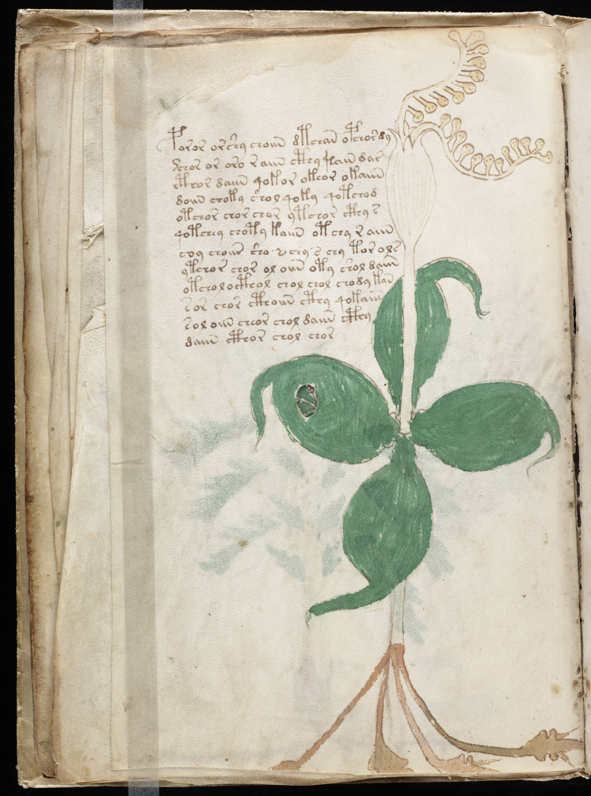

f15v
1poror orshy choiin dtchan opchor dy2*chor or oro r aiin cthy kain dar3cthor daiin qokor okeor okaiin4doiin choky shol qoky qotchod5otchor chor chor ytchor cthy s6qotchey choty kaiin otchy r aiin7coy choiin sho s chy s chy tor ols8ytchor chor ol oiin oty shol daiin9otcholocthol chol chol chody kan10sor chor cthoiin cthy qokaiin11soloiin cheor chol daiin cthy12daiin cthor chol chor
